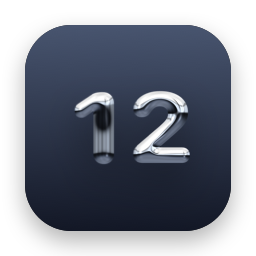
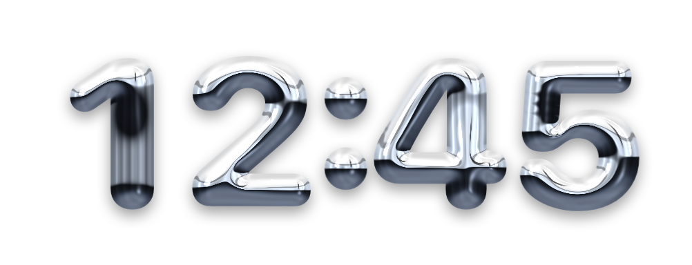

Floating chrome digits for your Mac desktop.

Questions, bug reports or feature ideas? Send an email and you'll usually get a reply within a few days.
valentin.isaac.holz@gmail.comPlease include your macOS version and, if something looks wrong, a screenshot.
Right-click an empty spot on your desktop, choose Edit Widgets…, search for Chrome Clock and drag the size you like onto the desktop. Small and Large stack hours over minutes; Medium and Extra Large show the time in one row.
For the widget: right-click it and choose Edit "Chrome Clock". For the floating clock: right-click the digits (or click the clock icon in the menu bar) and toggle 24-Hour Time.
Just drag the digits. Use Size in the menu to resize it, Always on Top to keep it above windows, and Lock Position to make it click-through. If it ever ends up off-screen, choose Reset Position from the menu bar icon.
macOS refreshes desktop widgets at most once a minute, so widgets can't show seconds or a blinking colon. The floating clock can: turn on Show Seconds in its menu.
macOS can tone down desktop widgets while other windows are in front. You can change this in System Settings → Desktop & Dock → Widget style.
Choose Launch at Login in the menu.
Click the clock icon in the menu bar and choose Quit Chrome Clock (⌘Q). To uninstall, remove any Chrome Clock widgets from your desktop, then drag Chrome Clock from your Applications folder to the Trash.
Last updated: October 20, 2026
Chrome Clock does not collect any data. The app and its widget run entirely on your Mac. They don't use analytics, tracking, advertising, accounts or network connections, and nothing you do in the app is sent to the developer or to third parties.
Your settings (such as 24-hour time, size and position) are stored only on your Mac using the standard macOS preferences system, and are removed when you delete the app.
If you email support, your message and email address are used only to reply to you and are never shared.
Questions about this policy: valentin.isaac.holz@gmail.com